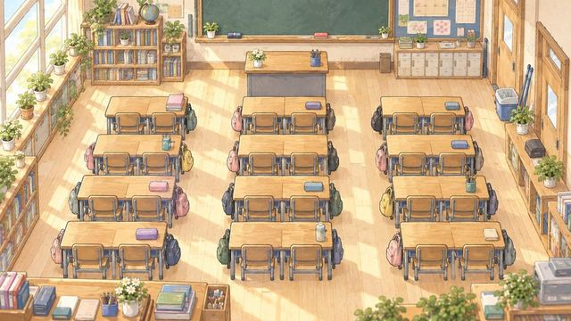
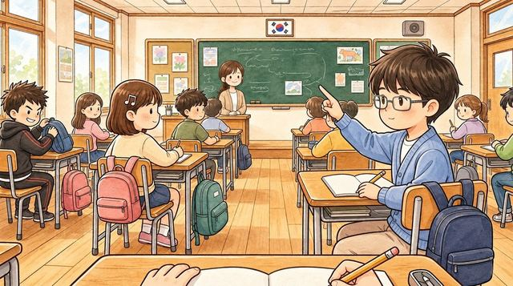
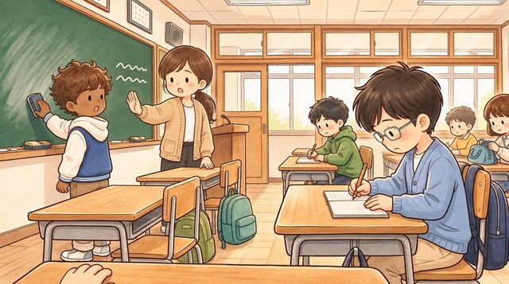
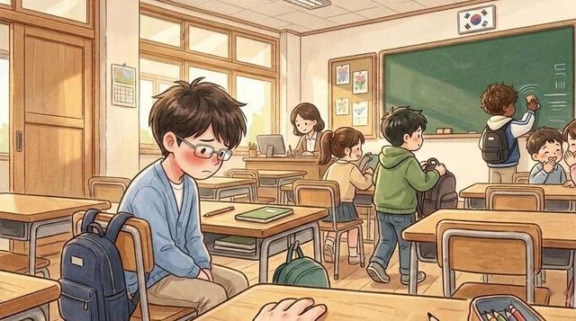
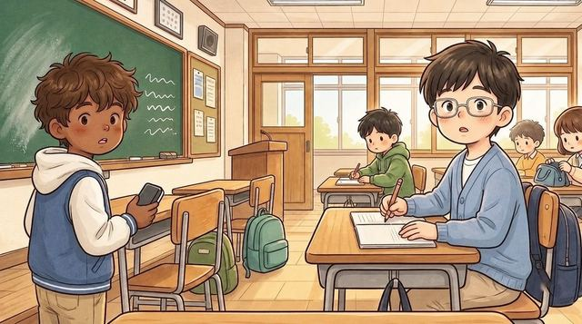
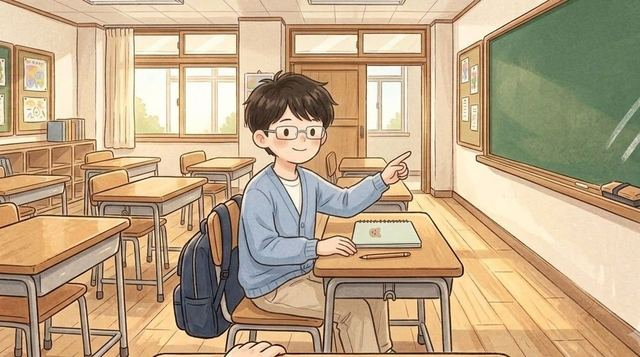
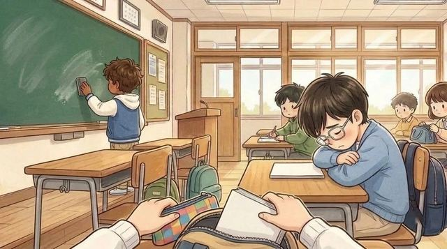
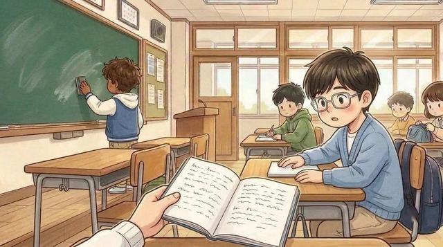
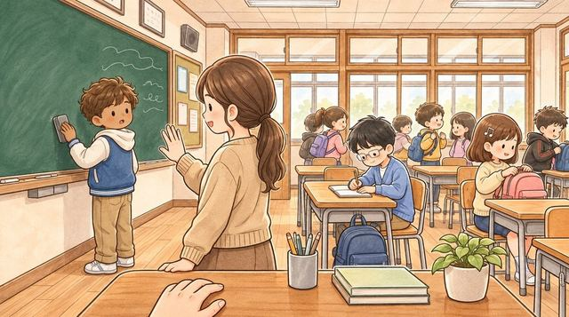

영민 · 만남 1 (2일차) — 아직 다 안 썼어 class

maps/class.jpg
나레이션마지막 수업이 끝났다. 선생님이 칠판에 알림장을 쓰셨다. 다섯 줄이었다.
선생님알림장 다 쓴 사람은 가방 싸요. 이번 주 칠판 당번 누구죠?
지호smile저요! 지우개 들고 기다릴게요!
나레이션나는 가방에서 알림장을 꺼냈다.
maps/class.jpg
🔎 미션: 「알림장」 꺼내기 (notice_book)
나레이션가방에서 알림장을 꺼내 책상에 펼쳤다.
나레이션한국어 글자를 하나씩 보고 썼다. 받침이 많은 줄은 두 번 봤다. 그래도 다섯 줄을 다 썼다.
주인공(속마음)smile(다 썼다. 휴.)

나레이션옆 줄을 봤다. 우리 반 영민이였다. 영민이는 손가락을 들어 허공에서 칠판 줄을 짚고 있었다. 그리고 한 글자씩 썼다.
나레이션영민이 알림장 글씨는 꼭 인쇄한 것 같았다. 반듯했다. 그런데 아직 셋째 줄이었다.
나레이션지호가 칠판 앞으로 갔다. 칠판지우개를 들었다.
지호smile다 썼지? 지운다~!

나레이션지호가 첫째 줄을 쓱 지웠다. 둘째 줄도 반쯤 지워졌다.
영민smile어…… 잠깐만…….
나레이션영민이 목소리는 아주 작았다. 지호는 못 들었다.
지훈smile영민이 또 꼴찌다~
나레이션몇 명이 킥킥 웃었다. 영민이 얼굴이 빨개졌다.
나레이션영민이가 연필을 내려놓았다. 알림장을 덮었다.
영민sad……나중에 쓸게.
나레이션영민이가 알림장을 가방에 넣었다. 눈은 책상만 보고 있었다.
지호smile셋째 줄 지운다~ 넷째 줄 지운다~
주인공(속마음)smile(영민이, 셋째 줄까지 썼었어. 넷째, 다섯째 줄이 남았는데.)
주인공(속마음)sad(다섯째 줄은 「준비물」이야. 그거 못 쓰면…….)

❓ 어떻게 할까?
▶ 선택 A: 칠판 앞으로 가서 「지호야, 잠깐! 영민이 아직 써. 오른쪽은 남겨 줘.」 하고 말한다.
maps/class.jpg
주인공smile지호야, 잠깐!

나레이션지호가 지우개를 든 채 돌아봤다.
주인공smile영민이 아직 쓰고 있어. 오른쪽 두 줄은 남겨 줘.
지호smile아, 나 축구 가야 되는데…….
주인공smile왼쪽은 다 지워도 돼. 오른쪽만.
지호smile……알았어. 빨리 써, 영민아!
나레이션지호가 왼쪽만 지웠다. 오른쪽에 넷째 줄과 다섯째 줄이 남았다.
나레이션영민이가 나를 봤다. 그리고 가방에서 알림장을 다시 꺼냈다. 천천히.
나레이션영민이 손가락이 다시 허공에서 줄을 짚었다. 연필이 움직였다.
주인공(속마음)smile(지호가 ‘빨리 써’ 해 버렸어. 나는 그 말은 안 해야지.)
maps/class.jpg
나레이션반 아이들이 하나둘 나갔다. 교실이 조용해졌다.
나레이션영민이가 마지막 글자를 썼다. 연필을 내려놓았다. 그리고 작게 말했다.
영민sad……끝.
나레이션영민이가 알림장을 반듯하게 덮었다. 모서리를 손바닥으로 한 번 맞췄다. 얼굴이 밝아져 있었다.
maps/class.jpg
나레이션칠판 오른쪽에 두 줄이 아직 남아 있었다. 지호는 벌써 운동장으로 뛰어나갔다.
영민smile이제…… 지워도 돼.

나레이션영민이가 칠판지우개를 가리켰다. 지호가 두고 간 것이었다.
maps/class.jpg
🔎 미션: 「칠판」 마저 지우기 (blackboard)
나레이션칠판에 남은 두 줄을 지웠다.
maps/class.jpg
나레이션칠판이 깨끗해졌다. 영민이가 가방을 메고 일어났다.
나레이션지훈이가 가방을 메고 지나가다 영민이를 불렀다.
지훈surprised영민아, 아침에 보니까 구피 한 마리 꼬리가 이상하던데?
영민smile그건 지느러미 끝이 접힌 애야. 물이 차가우면 그래. 지켜보면 돼.
지훈smile진짜? 알겠어, 지켜볼게.
영민smile너 기다려 줬지. ……나 원래 다 쓰면 ‘끝’ 해. 혼자서.
주인공surprised끝. 나도 해 볼까?
나레이션영민이가 소리 없이 어깨를 들썩이며 웃었다.
🍚 그날 저녁 (선택 A)

주인공sad엄마, 오늘 영민이가 알림장을 다 못 썼는데 지호가 칠판을 지웠어. 지훈이까지 ‘또 꼴찌다~’ 하니까 영민이가 ‘나중에 쓸게’ 하고 알림장을 덮었어.
엄마smile알림장 쓰는 데 꼴찌가 어디 있어. 늦게 써도 다 쓰면 되는 건데.
주인공smile내가 지호한테 오른쪽은 남겨 달라고 했어. 영민이가 알림장을 다시 꺼내서 다 쓰고 ‘끝.’ 했어.
엄마smile네가 한마디 해 주니까 영민이가 다시 알림장을 꺼냈구나.
주인공smile엄마, 영민이가 칠판 지워도 된다고 해서 내가 마저 지웠어. 영민이 글씨 진짜 반듯해.
엄마smile영민이가 지워도 된다고 해서 마음 편히 지웠겠다. 영민이 글씨, 엄마도 한번 보고 싶다.
▶ 선택 B: 끼어들면 영민이가 더 창피할 것 같아서, 못 본 척 내 가방을 싼다.
maps/class.jpg
나레이션나는 영민이 쪽을 안 봤다. 필통을 넣고, 교과서를 넣었다.

나레이션지호가 남은 줄까지 쓱쓱 대충 다 지웠다. 그리고 칠판지우개를 내려놓고 운동장으로 뛰어나갔다.
나레이션영민이는 텅 빈 칠판을 한참 봤다. 그러다 알림장을 들고 선생님 책상으로 갔다. 선생님이 준비물을 쪽지에 적어 주셨다.
주인공(속마음)smile(영민이 혼자 갔어. 나는 ‘잠깐만’ 한 마디도 안 했어.)
maps/class.jpg
나레이션반 아이들이 하나둘 나갔다. 교실이 조용해졌다.
나레이션영민이는 가방을 다 쌌다. 알림장은 가방 맨 밑에 있었다.
지훈sad영민아. 아까 꼴찌라고 한 거. ……별로였다. 미안.
영민smile……나 꼴찌 아니야. 안 끝났을 뿐이야.
maps/class.jpg
나레이션칠판에는 지호가 대충 지운 자국이 뿌옇게 남아 있었다.
영민smile자국…… 남았어.
나레이션영민이가 칠판지우개를 가리켰다. 지호가 두고 간 것이었다.
maps/class.jpg
🔎 미션: 「칠판」 마저 지우기 (blackboard)
나레이션칠판에 남은 자국을 깨끗이 지웠다.
maps/class.jpg
나레이션칠판이 깨끗해졌다. 영민이가 가방을 메고 일어났다.
나레이션지훈이가 가방을 메고 지나가다 영민이를 불렀다.
지훈surprised영민아, 아침에 보니까 구피 한 마리 꼬리가 이상하던데?
영민smile그건 지느러미 끝이 접힌 애야. 물이 차가우면 그래. 지켜보면 돼.
지훈smile진짜? 알겠어, 지켜볼게.
영민smile……나 준비물 알아. 이제.
나레이션영민이가 꾸벅 고개를 숙이고 나갔다.
🍚 그날 저녁 (선택 B)
주인공sad엄마, 오늘 영민이가 알림장을 다 못 썼는데 지호가 칠판을 지웠어. 지훈이까지 ‘또 꼴찌다~’ 하니까 영민이가 ‘나중에 쓸게’ 하고 알림장을 덮었어.
엄마smile알림장 쓰는 데 꼴찌가 어디 있어. 늦게 써도 다 쓰면 되는 건데.
주인공smile나는 그냥 가방 쌌어. 영민이는 혼자 선생님한테 가서 준비물을 물어봤어.
엄마smile옆에서 ‘잠깐만’ 한마디만 했어도 영민이가 든든했을 거야. 다음엔 그렇게 해 보자.
주인공smile엄마, 영민이가 칠판 지워도 된다고 해서 내가 마저 지웠어. 영민이 글씨 진짜 반듯해.
엄마smile영민이가 지워도 된다고 해서 마음 편히 지웠겠다. 영민이 글씨, 엄마도 한번 보고 싶다.
▶ 선택 C: 내 알림장을 영민이 책상에 펼쳐 두고 「이거 보고 써. 나 가방 싸는 동안.」 하고 말한다.
maps/class.jpg
나레이션나는 내 알림장을 영민이 책상 끝에 펼쳐 놓았다.

주인공smile칠판 지워져도 이거 보고 써. 나 가방 싸는 동안.
영민surprised……네 거?
주인공surprised응. 글씨는 좀 삐뚤어. 읽을 수 있어?
나레이션영민이가 내 알림장을 봤다. 손가락으로 넷째 줄을 짚었다.
영민smile……응. 읽을 수 있어.
나레이션영민이가 가방에서 자기 알림장을 다시 꺼냈다. 연필을 잡았다.
나레이션나는 가방을 쌌다. 필통, 교과서, 물통. 일부러 하나씩 천천히 넣었다. 영민이 쪽은 쳐다보지 않았다.
나레이션지호는 셋째 줄까지 지우고 축구하러 뛰어나갔다.
maps/class.jpg
나레이션반 아이들이 하나둘 나갔다. 교실이 조용해졌다.
나레이션영민이가 마지막 글자를 썼다. 연필을 내려놓았다. 그리고 작게 말했다.
영민sad……끝.
나레이션영민이가 알림장을 반듯하게 덮었다. 모서리를 손바닥으로 한 번 맞췄다. 얼굴이 밝아져 있었다.
maps/class.jpg
나레이션칠판 오른쪽에 두 줄이 아직 남아 있었다. 지호는 벌써 운동장으로 뛰어나갔다.
영민smile이제…… 지워도 돼.
나레이션영민이가 칠판지우개를 가리켰다. 지호가 두고 간 것이었다.
maps/class.jpg
🔎 미션: 「칠판」 마저 지우기 (blackboard)
나레이션칠판에 남은 두 줄을 지웠다.
maps/class.jpg
나레이션칠판이 깨끗해졌다. 영민이가 가방을 메고 일어났다.
나레이션지훈이가 가방을 메고 지나가다 영민이를 불렀다.
지훈surprised영민아, 아침에 보니까 구피 한 마리 꼬리가 이상하던데?
영민smile그건 지느러미 끝이 접힌 애야. 물이 차가우면 그래. 지켜보면 돼.
지훈smile진짜? 알겠어, 지켜볼게.
영민smile너 기다려 줬지. ……나 원래 다 쓰면 ‘끝’ 해. 혼자서.
주인공surprised끝. 나도 해 볼까?
나레이션영민이가 소리 없이 어깨를 들썩이며 웃었다.
🍚 그날 저녁 (선택 C)
주인공sad엄마, 오늘 영민이가 알림장을 다 못 썼는데 지호가 칠판을 지웠어. 지훈이까지 ‘또 꼴찌다~’ 하니까 영민이가 ‘나중에 쓸게’ 하고 알림장을 덮었어.
엄마smile알림장 쓰는 데 꼴찌가 어디 있어. 늦게 써도 다 쓰면 되는 건데.
주인공smile내 알림장을 영민이 책상에 펼쳐 줬어. 나는 영민이 쪽은 안 보고 천천히 가방 쌌어.
엄마smile영민이가 편하게 쓰라고 안 쳐다봤구나. 그것도 배려야.
주인공smile엄마, 영민이가 칠판 지워도 된다고 해서 내가 마저 지웠어. 영민이 글씨 진짜 반듯해.
엄마smile영민이가 지워도 된다고 해서 마음 편히 지웠겠다. 영민이 글씨, 엄마도 한번 보고 싶다.
▶ 선택 D: 선생님께 가서 「영민이 아직 못 썼어요.」 하고 작게 말한다.
maps/class.jpg
나레이션나는 선생님 책상으로 갔다.

주인공smile선생님, 영민이 아직 못 썼어요.
선생님지호야, 잠깐. 오른쪽 두 줄은 남겨 둬요. 알림장은 꼴찌 같은 거 없어요. 각자 자기 걸 쓰는 거예요.
나레이션지호가 왼쪽만 지웠다. 영민이가 알림장을 다시 꺼냈다. 고개를 숙이고 한 글자씩 썼다.
주인공(속마음)smile(선생님이 멈춰 주셨어. 영민이는 자기 손으로 쓰고 있어.)
maps/class.jpg
나레이션반 아이들이 하나둘 나갔다. 교실이 조용해졌다.
나레이션영민이가 마지막 글자를 썼다. 연필을 내려놓았다. 그리고 작게 말했다.
영민sad……끝.
나레이션영민이가 알림장을 반듯하게 덮었다. 모서리를 손바닥으로 한 번 맞췄다. 얼굴이 밝아져 있었다.
maps/class.jpg
나레이션칠판 오른쪽에 두 줄이 아직 남아 있었다. 지호는 벌써 운동장으로 뛰어나갔다.
영민smile이제…… 지워도 돼.
나레이션영민이가 칠판지우개를 가리켰다. 지호가 두고 간 것이었다.
maps/class.jpg
🔎 미션: 「칠판」 마저 지우기 (blackboard)
나레이션칠판에 남은 두 줄을 지웠다.
maps/class.jpg
나레이션칠판이 깨끗해졌다. 영민이가 가방을 메고 일어났다.
나레이션지훈이가 가방을 메고 지나가다 영민이를 불렀다.
지훈surprised영민아, 아침에 보니까 구피 한 마리 꼬리가 이상하던데?
영민smile그건 지느러미 끝이 접힌 애야. 물이 차가우면 그래. 지켜보면 돼.
지훈smile진짜? 알겠어, 지켜볼게.
🍚 그날 저녁 (선택 D)
주인공sad엄마, 오늘 영민이가 알림장을 다 못 썼는데 지호가 칠판을 지웠어. 지훈이까지 ‘또 꼴찌다~’ 하니까 영민이가 ‘나중에 쓸게’ 하고 알림장을 덮었어.
엄마smile알림장 쓰는 데 꼴찌가 어디 있어. 늦게 써도 다 쓰면 되는 건데.
주인공smile선생님한테 영민이 아직 못 썼다고 작게 말했어. 선생님이 지호한테 오른쪽은 남기라고 하셨어.
엄마smile혼자 어려울 땐 어른한테 말하는 것도 좋은 방법이야.
주인공smile엄마, 영민이가 칠판 지워도 된다고 해서 내가 마저 지웠어. 영민이 글씨 진짜 반듯해.
엄마smile영민이가 지워도 된다고 해서 마음 편히 지웠겠다. 영민이 글씨, 엄마도 한번 보고 싶다.